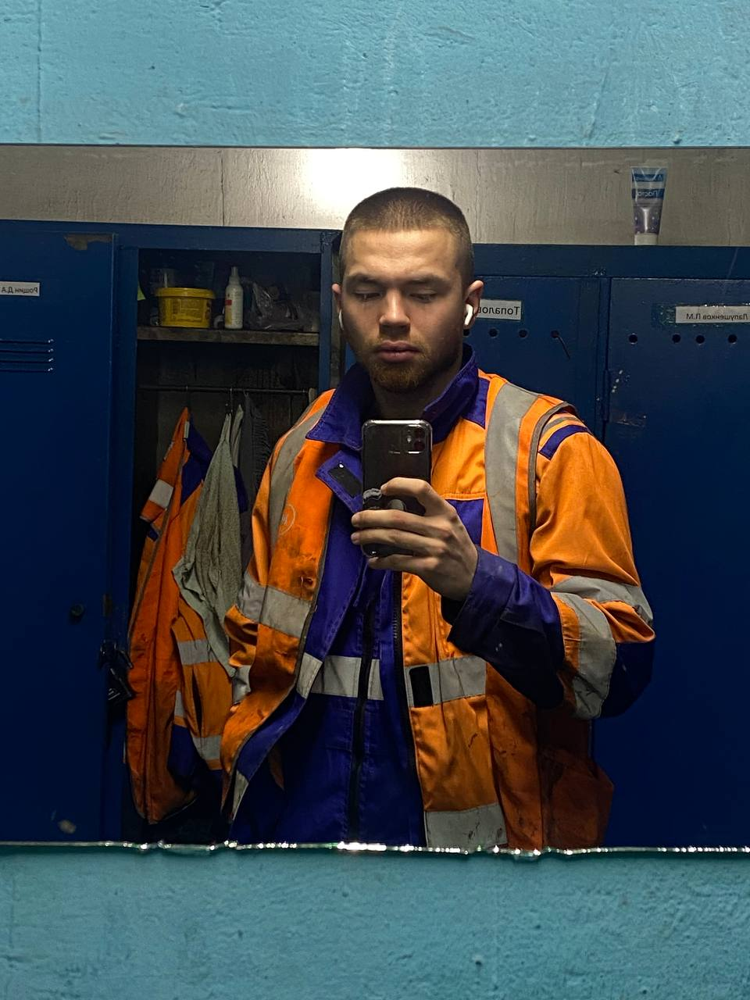

Фритрек и нулевой спринт: Подготовка к работе
<Неожиданное знакомство>
Это было самое начало пути. На этом этапе важно было проникнуться основами и настроиться на учёбу. И, возможно, подумать, как новые знания могут повлиять на ваше будущее.
Бывало у вас такое, что одно знакомство полностью меняет вашу
жизнь? У меня так и случилось. Конец 2024 года, я работаю в
месте, которое меня абсолютно не устраивает и тут, откуда не
возьмись, ко мне на околоток устравается абсолютно неприметный
на первый взгляд парень. Очень худой, c длинными волосами, в
очках, мне это показалось странным, потому что моя предыдущая
работа требует высокой физической выносливости. Зачастую я легко
нахожу общий язык с новыми людьми, поэтому я сразу подумал о
том, что хорошо было бы с ним пообщаться, узнать о нем больше. И
так получается, что наш начальник ставит нас работать вместе в
эту ночь(работа была по ночам). И вот, я на правах лидера, в
нашей новоиспеченной "команде" начал его всему обучать. После
всего начал распрашивать его о том, чем он занимается в
свободное время. Он сказал: "разрабатываю игры". Для меня это
прозвучало как какая-то байка от старших пацанов из двора в
детсве. По типу: 'А у меня дома блин миллион миллионов и еще
карточки черепашки-ниндзя все собраны'. Я начал узнавать
подробней и оказалось, действительно он это делает как хобби.
Тогда я был абсолютным 0 в мире IT и он мне начал рассказывать о
том, на каком языке кодит, что такое фреймворки и тому подобные
вещи. Для меня это было безумно интересно слышать, потому что
это действительно вызвало у меня заинтересованность; как раз ту,
которую я искал долгое время в деле, в которое ушел бы с
головой. Потому что, для себя я давно понял, что на
'студенческих работах-подработках' я больше в жизни не пойду(мне
21), а та сфера деятельности, в которой я был в тот момент, меня
никоем образом не устраивала.
Так вот, эта ночная смена подошла к концу. В моей голове
появился нечеткий вектор(но уже что-то), куда двигаться дальше.
По мимо ночной работы , я очно учусь днём, то есть приходя с
работы я спал 2 часа, шел на пары до 2-3 часов после полудня и
досыпал оставшийся день, приходя домой. График жуткий, учитывая
ко всему прочему то, что последние 2.5 года я хожу в зал,
заменив им курение(дофамин, гармончики, все дела сами
понимаете). Так вышло, что в том семестре у нас было всего 3
учебных дня с понедельника по среду. Во все остальные дни была
только работа и зал. И я подумал, почему бы появившееся, у меня
свободное время не потратить на изучения того нового, чем я
заинтересовался буквально недавно. И так каждую день, в
свободные от учебы время, я начал по чуть-чуть смотреть видео на
ютубе по html, затем css, и даже в js ушел, так скажем, не с
головой, но по колено в воде я точно был.(рекурсивные функции
даже прошел) Кстати, забыл рассказать, как же я пришел все-таки
к тому, чтобы изучать именно веб-разработку. Я подумал, что
обожаю стильно одеваться, собирать красивые образы. И ведь
создание сайтов буквально, можно сказать, про это же. То есть у
тебя есть фотка образа из pinterest(в нашем случае figma) и ты
собираешь его по частичкам, внося свой неповторимый подчерк.
P.S. на фото я на предыдущей своей работе:)